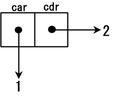
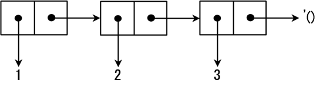

序对和列表
作为Lisp语言大家族的一员，Scheme同样擅长于处理表。你应该理解表以及有关表的操作以掌握Scheme。表在 递归函数 和 高阶函数 中扮演重要角色
在本章中，会讲解基本的表操作，例如 cons ， car ， cdr ， list 和 quote
序对和表
序对
首先，解释一下 表的元素 ： Cons单元 。Cons单元是一个 存放了两个地址的内存空间 。Cons单元可用 函数cons 生成：
(cons 1 2) ;Value 11: (1 . 2)
系统返回 (1 . 2) 。如图所示：

函数 cons 给 两个地址分配了内存空间 ，并把 存放指向 1 的地址放在一个空间 ，把 存放指向 2 的地址放在另一个空间 ：
- 存放指向1的地址的内存空间被称作 car 部分
- 存放指向2的地址的内存空间被称作 cdr 部分
car是 寄存器地址部分（Contents of the Address part of the Register）的简称 cdr是寄存器减量部分（Contents of the Decrement part of the Register）的简称 这些名字最初来源于Lisp首次被实现所使用的硬件环境中内存空间的名字 这些名字同时也表明Cons单元的本质就是一个内存空间 cons这个名字是术语构造（construction）的简称
Cons单元也可以被串起来：
(cons 3 (cons 1 2)) ; (3 1 . 2)
(3 . (1 . 2)) 可以更方便地表示为 (3 1 . 2) 。这种情况的内存空间如图2所示：

Cons单元可以 存放不同类型的数据 ，也可以 嵌套 ：
(cons #\a (cons 3 "hello")) ; (#\a 3 . "hello") (cons (cons 0 1) (cons 2 3)) ; ((0 . 1) 2 . 3)
这是因为Scheme可以通过地址操作所有的数据
#\c ：代表了一个 字符c
表
表是 Cons单元 通过 用cdr部分连接 到 下一个Cons单元的开头 实现的。表中包含的 '() 被称作 空表 。图3展示了表 (1 2 3) 的内存结构：

就算数据仅由一个Cons单元组成，只要它的cdr单元是 '() ，那它就是一个表
事实上，表可以像下面这样递归地定义：
- '() 是一个 表
- 如果 ls 是一个 表 且 obj 是某种类型的 数据 ，那么 (cons obj ls) 也是一个 表
正因为表是一种被递归定义的数据结构 ，将它用在递归的函数中显然是合理的
原子
不使用Cons单元的数据结构 称为 原子 （atom）
- 数字
- 字符
- 字符串
- 向量
- 空表 '() 都是原子
'() 既是原子，又是表
引用
所有的记号都会依据Scheme的求值规则求值：所有记号都会从最内层的括号依次向外层括号求值，且最外层括号返回的值将作为S-表达式的值。一个被称为 引用 （quote）的形式可以用来 阻止记号被求值 。它是用来将 符号或者表原封不动地传递 给程序，而不是求值后变成其它的东西
例如：(+ 2 3)会被求值为5
然而(quote (+ 2 3))则向程序返回(+ 2 3)本身
因为quote的使用频率很高，它被简写为 ' ：
'(+ 2 3) ; => (+ 2 3) '+ ; => + '() ; => ()
- '(+ 2 3) 代表列表 (+ 2 3) 本身；
- '+ 代表符号 + 本身；
实际上， '() 是对空表的引用
也就是说，尽管解释器返回()代表空表，你也应该用 '() 来表示空表
特殊形式
Scheme有两种不同类型的操作符：
- 函数 ：会对所有的参数求值并返回值
- 特殊形式 ：不会对所有的参数求值
quote，lambda，define，if，set!，等都是特殊形式
car函数和cdr函数
- car 函数：返回一个 Cons单元 的 car部分
- cdr 函数：返回一个 Cons单元 的 cdr部分
- 如果cdr部分串连着Cons单元，解释器会打印出整个cdr部分
- 如果Cons单元的cdr部分不是 '() ，那么其值稍后亦会被展示
(car '(1 2 3 4)) ; 1 (cdr '(1 2 3 4)) ; (2 3 4)
list函数
list 函数：可以 构建包含数个元素的表 ：
- 有 任意个数的参数
- 返回由 这些参数构成的表
(list) ; () (list 1) ; (1) (list '(1 2) '(3 4)) ; ((1 2) (3 4)) (list 0) ; (0) (list 1 2) ; (1 2)